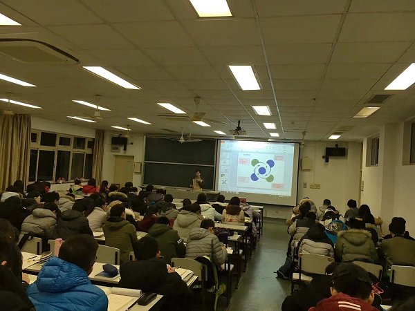
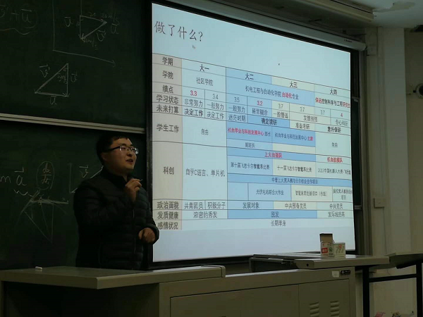
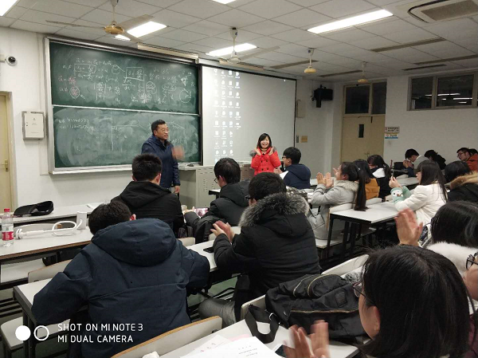

2017年12月19日晚上18-20点，自强队指导教师黄慎之老师、党支部书记叶立俊同学以及来自自强队四个科创组别10名队员代表受邀参加了上海大学社区学院理工三组组织的科创团队专场活动课。社区学院理工三组高红梅、徐磊等六位辅导员老师及社区学院理工三组共691位大一新生一起参加了活动课。
 本次活动课上，来自自强队家庭组骨干队员耿许武、赵磊、篮球组队员袁天翱、沈周丽等同学围绕自己所在的组别展开了介绍，并就自己在科创团队中如何克服困难的经历以及自己加入自强队以来的心得体会同大一的同学们做了简单的交流，来自智能车组的任宏伟、余良迪同学以及从今年秋季学期自强队苗圃计划走出来的优秀队员刘子儒同学从自己的专业谈起，就大一同学们所面临的专业分流、选课、校园生活等关心的话题做了经验上的分享。值得一提的是，和蔼可亲的自强队指导教师黄慎之老师为激励同学们，现场高歌一曲，博得了场下同学们的阵阵掌声，台下圈粉无数。
本次社区学院科创团队专场活动课的开展，再一次提升了机自学院和自强队在大一新生中的影响力，也为自强队苗圃计划的实施奠定了坚实的基础，更是自强队全队上下精神风貌的完美诠释。
上海大学自强队供稿
2017年12月20日